Решение нелинейных уравнений методом простой итерации
Практическая часть
Теоретическая часть
Пусть f(х)=0 имеет на [a,b] единственный корень .
Требуется найти его с заданной точностью. Применяя тождественные преобразования приведем начальное уравнение к виду 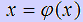.
Выберем приближенное значение корня х0, которое принадлежит отрезку [a,b].
Вычислим 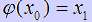. Найденное значение х1 подставим в правую часть
соотношения и получим х2. Продолжая процесс высиления, получим численную последовательность
х0,х1,х2,х3,... . Если существует предел этой последовательности,
то он и является корнем уравнения , то есть можно записать 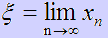.
.
Требуется найти его с заданной точностью. Применяя тождественные преобразования приведем начальное уравнение к виду 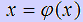.
Выберем приближенное значение корня х0, которое принадлежит отрезку [a,b].
Вычислим 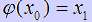. Найденное значение х1 подставим в правую часть
соотношения и получим х2. Продолжая процесс высиления, получим численную последовательность
х0,х1,х2,х3,... . Если существует предел этой последовательности,
то он и является корнем уравнения , то есть можно записать 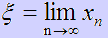.
Достаточное условие метода определяется теоремой:
-
Пусть функция 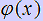 определена и дифференцируем на [a,b]. Причем все ее значения
принадлежат [a,b] и выполняется условие
 для всех х, принадлежащих
[a,b]. Тогда итерационный процесс сходится независимо от начального приближения х0 и
является единственным корнем на отрезке [a,b].
для всех х, принадлежащих
[a,b]. Тогда итерационный процесс сходится независимо от начального приближения х0 и
является единственным корнем на отрезке [a,b].
Практическая часть
Пошаговые действия |
Пояснения к действиям |
| 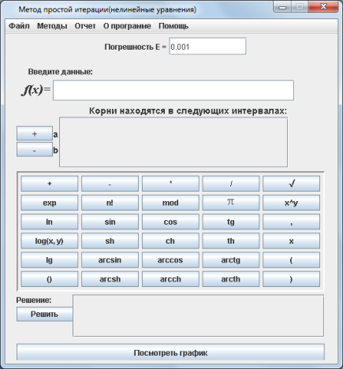 | 1. Заходим в программу. Появляется окно, на котором выбираем категорию методов "Методы решения нелинейных уравнений" Выбираем метод "Метод простой итерации". Нажимаем кнопку "PUSH". Появляется окно, показанное на рисунке слева. |
| 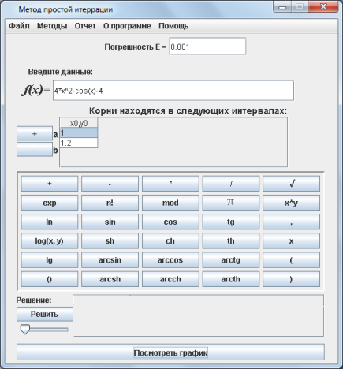 | 2. Записываем в поле f(х) уравнение, которое нужно решить. Задаем интервал [a,b] с помошью кнопок "+", "-". Если нажать "+" появятся поля для ввода интервала. Нажимаем кнопку "Решить". |
| 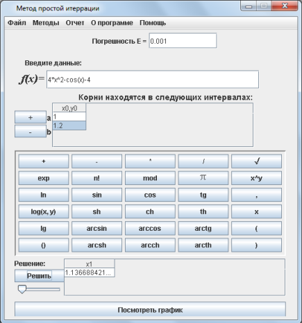 | 3. После выполнения всех действий, внизу, в поле "Решение" появится ответ. |
| 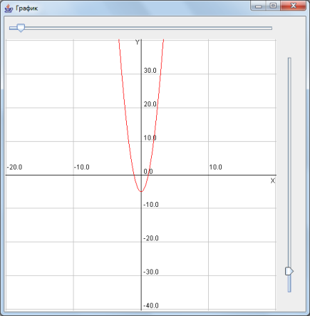 | 4. Чтобы просмотреть график уравнения, нужно нажать кнопку "Просмотреть график". Появится график, как на рисунке слева. С помощью бегунков расположенных справа и сверху экранной формы, вы можете выбрать удобный масштаб клеток для просмотра графика. |
| 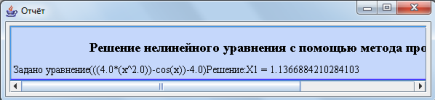 | 5. После того, как вы получили ответ, можно просмотреть отчет, где предоставлено поэтапное решение. Для этого необходимо в главном меню программы, расположенном на верху экранной формы выбрать пункт "Отчет/Просмотр отчета". Вы увидите окно, расположенное слева. Также можно сохранить этот отчет нажав кнопку главного меню "Отчет/Сохранить отчет". |
 |
6. Если решение примера может пригодится вам в будущем, вы можете сохранить его с помощью конпки меню "Файл/Сохранить". В окне, которое появится(оно показано на рисунке слева) необходимо выбрать папку, в которую он сохранится и написать название. |